# load packages
library(tidyverse) # for data wrangling and visualization
library(ggformula) # for modeling
library(scales) # for pretty axis labels
library(knitr) # for neatly formatted tables
library(kableExtra) # also for neatly formatted tables
# set default theme and larger font size for ggplot2
ggplot2::theme_set(ggplot2::theme_bw(base_size = 16))SLR: Simulation-based inference
Hypothesis testing for slope
Application exercise
Complete Exercises 0-2.
Simulation-Based Inference
- Randomization test for slope
Data: San Antonio Income & Organic Food Access
- Average household income (per zip code) and number of organic vegetable offerings in San Antonio, TX
- Data from HEB website, compile by high school student Linda Saucedo, Fall 2019
- Source: Skew The Script

Goal: Use the average household income to understand variation in access to organic foods.
Computational setup
Bootstrapped confidence intervals: Topics
- Find range of plausible values for the slope using bootstrap confidence intervals
Exploratory data analysis
Code
heb <- read_csv("../data/HEBIncome.csv") |>
mutate(Avg_Income_K = Avg_Household_Income/1000)Rows: 37 Columns: 4
── Column specification ────────────────────────────────────────────────────────
Delimiter: ","
chr (1): Store_Location
dbl (3): Zip_Code, Avg_Household_Income, Number_Organic
ℹ Use `spec()` to retrieve the full column specification for this data.
ℹ Specify the column types or set `show_col_types = FALSE` to quiet this message.Code
gf_point(Number_Organic ~ Avg_Income_K, data = heb, alpha = 0.7) |>
gf_labs(
x = "Average Household Income (in thousands)",
y = "Number of Organic Vegetables",
) |>
gf_refine(scale_x_continuous(labels = label_dollar()))
Modeling
heb_fit <- lm(Number_Organic ~ Avg_Income_K, data = heb)
tidy(heb_fit) |>
kable(digits=2) #neatly format table to 2 digits| term | estimate | std.error | statistic | p.value |
|---|---|---|---|---|
| (Intercept) | -14.72 | 9.30 | -1.58 | 0.12 |
| Avg_Income_K | 0.96 | 0.13 | 7.50 | 0.00 |
. . .
- Intercept: HEBs in Zip Codes with an average household income of $0 are expected to have -14.72 organic vegetable options, on average.
- Is this interpretation useful?
- Slope: For each additional $1,000 in average household income, we expect the number of organic options available at nearby HEBs to increase by 0.96, on average.
From sample to population
For each additional $1,000 in average household income, we expect the number of organic options available at nearby HEBs to increase by 0.96, on average.
- Estimate is valid for the single sample of 37 HEBs
- What if we’re not interested quantifying the relationship between the household income and access to organic vegetables in this single sample?
- What if we want to say something about the relationship between these variables for all supermarkets in America?
Statistical inference
Statistical inference refers to ideas, methods, and tools for to generalizing the single observed sample to make statements (inferences) about the population it comes from
For our inferences to be valid, the sample should be random and representative of the population we’re interested in
Sampling is natural

- When you taste a spoonful of soup and decide the spoonful you tasted isn’t salty enough, that’s exploratory analysis
- If you generalize and conclude that your entire soup needs salt, that’s an inference
- For your inference to be valid, the spoonful you tasted (the sample) needs to be representative of the entire pot (the population)
Confidence interval via bootstrapping
- Bootstrap new samples from the original sample
- Fit models to each of the samples and estimate the slope
- Use features of the distribution of the bootstrapped slopes to construct a confidence interval
Inference for simple linear regression
Calculate a confidence interval for the slope, \(\beta_1\)
Conduct a hypothesis test for the slope, \(\beta_1\)
Why not \(\beta_0\)?
We can but it isn’t super interesting typically
. . .
What is a confidence interval?
What is a hypothesis test?
Confidence interval for the slope
Confidence interval
- Confidence interval: plausible range of values for a population parameter
- single point estimate \(\implies\) fishing in a murky lake with a spear
- confidence interval \(\implies\) fishing with a net
- We can throw a spear where we saw a fish but we will probably miss, if we toss a net in that area, we have a good chance of catching the fish
- If we report a point estimate, we probably will not hit the exact population parameter, but if we report a range of plausible values we have a good shot at capturing the parameter
- High confidence \(\implies\) wider interval (larger net)
- Remember: single CI \(\implies\) either you hit parameter or you don’t
Confidence interval for the slope
A confidence interval will allow us to make a statement like “For each $1K in average income, the model predicts the number of organic vegetables available at local supermarkets to be higher, on average, by 0.96, plus or minus X options.”
. . .
Should X be 1? 2? 3?
If we were to take another sample of 37 would we expect the slope calculated based on that sample to be exactly 0.96? Off by 1? 2? 3?
The answer depends on how variable (from one sample to another sample) the sample statistic (the slope) is
We need a way to quantify the variability of the sample statistic
Quantify the variability of the slope
for estimation
- Two approaches:
- Via simulation (what we’ll do today)
- Via mathematical models (what we’ll do soon)
- Bootstrapping to quantify the variability of the slope for the purpose of estimation:
- Generate new samples by sampling with replacement from the original sample
- Fit models to each of the new samples and estimate the slope
- Use features of the distribution of the bootstrapped slopes to construct a confidence interval
Original Sample
`geom_smooth()` using formula = 'y ~ x'Warning: Removed 1 row containing non-finite outside the scale range
(`stat_smooth()`).Warning: Removed 1 row containing missing values or values outside the scale range
(`geom_point()`).
Bootstrap sample 1
`geom_smooth()` using formula = 'y ~ x'Warning: Removed 1 row containing non-finite outside the scale range
(`stat_smooth()`).`geom_smooth()` using formula = 'y ~ x'Warning: Removed 1 row containing non-finite outside the scale range
(`stat_smooth()`).Warning: Removed 1 row containing missing values or values outside the scale range
(`geom_point()`).
Removed 1 row containing missing values or values outside the scale range
(`geom_point()`).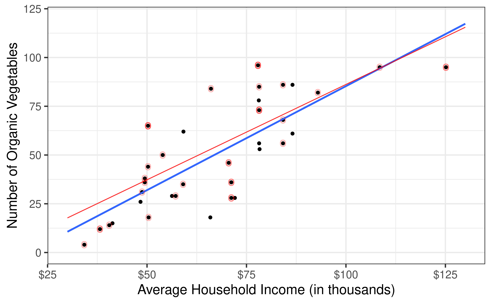
Bootstrap sample 2
`geom_smooth()` using formula = 'y ~ x'Warning: Removed 1 row containing non-finite outside the scale range
(`stat_smooth()`).`geom_smooth()` using formula = 'y ~ x'Warning: Removed 1 row containing non-finite outside the scale range
(`stat_smooth()`).Warning: Removed 1 row containing missing values or values outside the scale range
(`geom_point()`).
Removed 1 row containing missing values or values outside the scale range
(`geom_point()`).Warning: Removed 6 rows containing missing values or values outside the scale range
(`geom_line()`).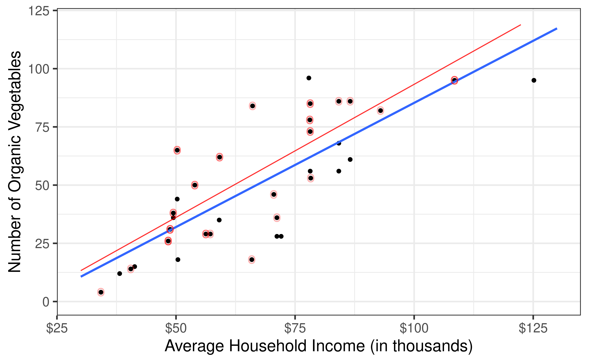
Bootstrap sample 3
`geom_smooth()` using formula = 'y ~ x'Warning: Removed 1 row containing non-finite outside the scale range
(`stat_smooth()`).`geom_smooth()` using formula = 'y ~ x'Warning: Removed 1 row containing missing values or values outside the scale range
(`geom_point()`).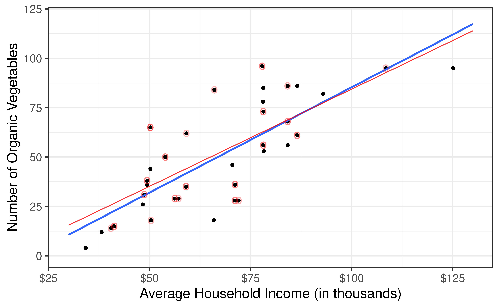
Bootstrap sample 4
`geom_smooth()` using formula = 'y ~ x'Warning: Removed 1 row containing non-finite outside the scale range
(`stat_smooth()`).`geom_smooth()` using formula = 'y ~ x'Warning: Removed 1 row containing missing values or values outside the scale range
(`geom_point()`).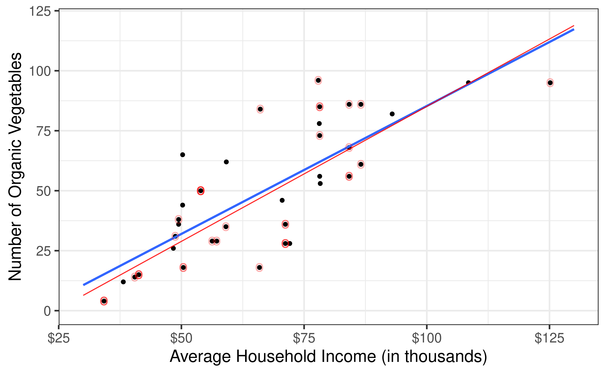
Bootstrap sample 5
`geom_smooth()` using formula = 'y ~ x'Warning: Removed 1 row containing non-finite outside the scale range
(`stat_smooth()`).`geom_smooth()` using formula = 'y ~ x'Warning: Removed 1 row containing missing values or values outside the scale range
(`geom_point()`).
Bootstrap samples 1 - 5
`geom_smooth()` using formula = 'y ~ x'Warning: Removed 1 row containing non-finite outside the scale range
(`stat_smooth()`).`geom_smooth()` using formula = 'y ~ x'Warning: Removed 2 rows containing non-finite outside the scale range
(`stat_smooth()`).Warning: Removed 1 row containing missing values or values outside the scale range
(`geom_point()`).Warning: Removed 6 rows containing missing values or values outside the scale range
(`geom_line()`).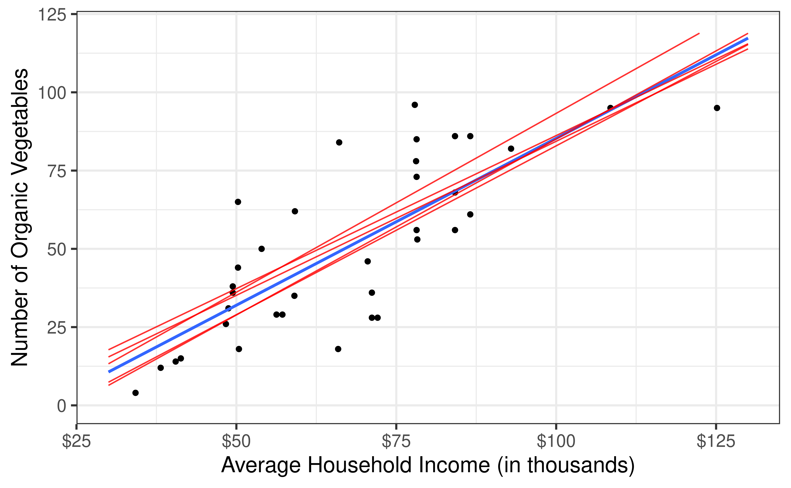
Bootstrap samples 1 - 100
`geom_smooth()` using formula = 'y ~ x'Warning: Removed 1 row containing non-finite outside the scale range
(`stat_smooth()`).`geom_smooth()` using formula = 'y ~ x'Warning: Removed 82 rows containing non-finite outside the scale range
(`stat_smooth()`).Warning: Removed 1 row containing missing values or values outside the scale range
(`geom_point()`).Warning: Removed 181 rows containing missing values or values outside the scale range
(`geom_line()`).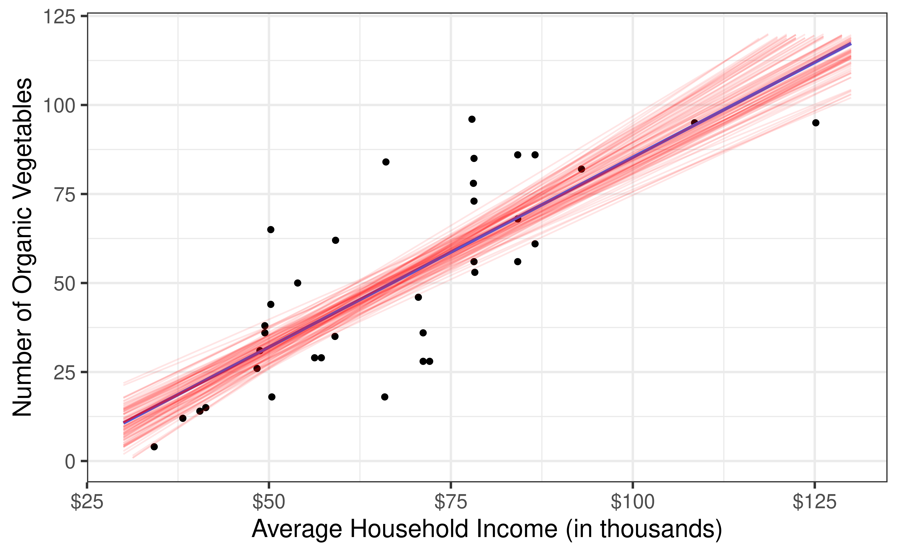
Slopes of bootstrap samples
Fill in the blank: For each additional $1k in average household income, the model predicts the number of organic vegetables available to be higher, on average, by 0.96, plus or minus ___.
`geom_smooth()` using formula = 'y ~ x'Warning: Removed 1 row containing non-finite outside the scale range
(`stat_smooth()`).`geom_smooth()` using formula = 'y ~ x'Warning: Removed 82 rows containing non-finite outside the scale range
(`stat_smooth()`).Warning: Removed 1 row containing missing values or values outside the scale range
(`geom_point()`).Warning: Removed 181 rows containing missing values or values outside the scale range
(`geom_line()`).
Slopes of bootstrap samples
Fill in the blank: For each additional $1k in average household income, the model predicts the number of organic vegetables available to be higher, on average, by 0.96, plus or minus ___.
Warning: Using `size` aesthetic for lines was deprecated in ggplot2 3.4.0.
ℹ Please use `linewidth` instead.
Confidence level
How confident are you that the true slope is between 0.8 and 1.2? How about 0.9 and 1.0? How about 1.0 and 1.4?
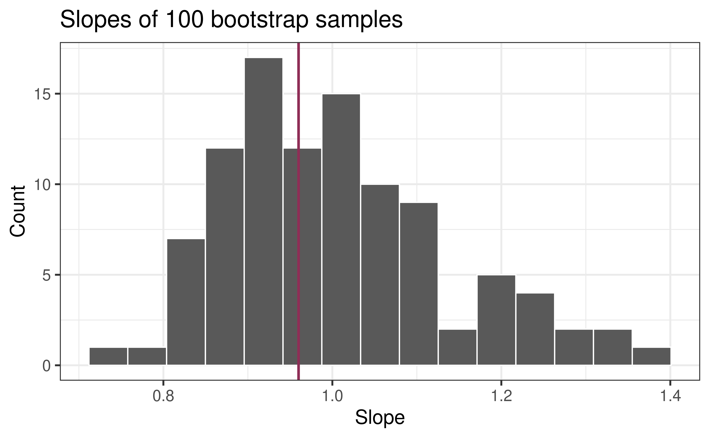
95% confidence interval
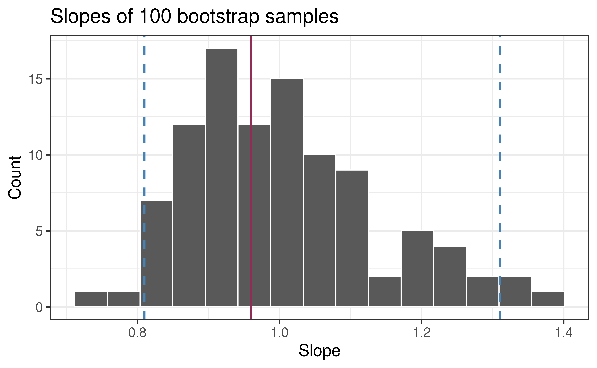
- 95% bootstrapped confidence interval: bounded by the middle 95% of the bootstrap distribution
- We are 95% confident that for each additional $1K in average household income, the model predicts the number of organic vegetables options at local supermarkets to be higher, on average, by 0.81 to 1.31.
Computing the CI for the slope I
Calculate the observed slope:
library(infer) # package that does Simulation-Based Inference
observed_fit <- heb |>
specify(Number_Organic ~ Avg_Income_K) |>
fit()
observed_fit# A tibble: 2 × 2
term estimate
<chr> <dbl>
1 intercept -14.7
2 Avg_Income_K 0.959Computing the CI for the slope II
Take 100 bootstrap samples and fit models to each one:
set.seed(1120)
boot_fits <- heb |>
specify(Number_Organic ~ Avg_Income_K) |>
generate(reps = 100, type = "bootstrap") |>
fit()
boot_fits# A tibble: 200 × 3
# Groups: replicate [100]
replicate term estimate
<int> <chr> <dbl>
1 1 intercept -40.9
2 1 Avg_Income_K 1.25
3 2 intercept -23.9
4 2 Avg_Income_K 1.09
5 3 intercept -18.6
6 3 Avg_Income_K 1.02
7 4 intercept -1.96
8 4 Avg_Income_K 0.828
9 5 intercept -15.1
10 5 Avg_Income_K 0.951
# ℹ 190 more rowsComputing the CI for the slope III
Percentile method: Compute the 95% CI as the middle 95% of the bootstrap distribution:
get_confidence_interval(
boot_fits,
point_estimate = observed_fit,
level = 0.95,
type = "percentile" #default method
)# A tibble: 2 × 3
term lower_ci upper_ci
<chr> <dbl> <dbl>
1 Avg_Income_K 0.822 1.27
2 intercept -34.5 -2.56Complete Exercises 3-6
Precision vs. accuracy
If we want to be very certain that we capture the population parameter, should we use a wider or a narrower interval? What drawbacks are associated with using a wider interval?
. . .

Precision vs. accuracy
How can we get best of both worlds – high precision and high accuracy?
Changing confidence level
How would you modify the following code to calculate a 90% confidence interval? How would you modify it for a 99% confidence interval?
Changing confidence level
## confidence level: 90%
get_confidence_interval(
boot_fits, point_estimate = observed_fit,
level = 0.90, type = "percentile"
)# A tibble: 2 × 3
term lower_ci upper_ci
<chr> <dbl> <dbl>
1 Avg_Income_K 0.829 1.23
2 intercept -31.7 -3.76## confidence level: 99%
get_confidence_interval(
boot_fits, point_estimate = observed_fit,
level = 0.99, type = "percentile"
)# A tibble: 2 × 3
term lower_ci upper_ci
<chr> <dbl> <dbl>
1 Avg_Income_K 0.795 1.36
2 intercept -43.3 -0.535Complete Exercises 7-11.
Randomization Test for Slope: Topics
- Evaluate a claim about the slope using hypothesis testing
The regression model
heb_fit <- lm(Number_Organic ~ Avg_Income_K, data = heb)
tidy(heb_fit) |>
kable(digits = 2)| term | estimate | std.error | statistic | p.value |
|---|---|---|---|---|
| (Intercept) | -14.72 | 9.30 | -1.58 | 0.12 |
| Avg_Income_K | 0.96 | 0.13 | 7.50 | 0.00 |
. . .
Slope: For each additional $1,000 in average household income, we expect the number of organic options available at nearby HEBs to increase by 0.96, on average.
Research question and hypotheses
“Do the data provide sufficient evidence that \(\beta_1\) (the true slope for the population) is different from 0?”
. . .
Null hypothesis: there is no linear relationship between Number_Organic and Avg_Income_K
\[ H_0: \beta_1 = 0 \]
. . .
Alternative hypothesis: there is a linear relationship between Number_Organic and Avg_Income_K
\[ H_A: \beta_1 \ne 0 \]
Hypothesis testing as a court trial
- Null hypothesis, \(H_0\): Defendant is innocent
- Alternative hypothesis, \(H_A\): Defendant is guilty
- Present the evidence: Collect data
- Judge the evidence: “Could these data plausibly have happened by chance if the null hypothesis were true?”
- Yes: Fail to reject \(H_0\)
- No: Reject \(H_0\)
- Not guilty \(\neq\) innocent \(\implies\) why we say “fail to reject the null” rather than “accept the null”
Hypothesis testing framework
- Start with a null hypothesis, \(H_0\) that represents the status quo
- Set an alternative hypothesis, \(H_A\) that represents the research question, i.e. claim we’re testing
- Under the assumption that the null hypothesis is true, calculate a p-value (probability of getting outcome or outcome even more favorable to the alternative)
- if the test results suggest that the data do not provide convincing evidence for the alternative hypothesis, stick with the null hypothesis
- if they do, then reject the null hypothesis in favor of the alternative
Complete Exercise 12
Quantify the variability of the slope
for testing
- Two approaches:
- Via simulation
- Via mathematical models
- Use Randomization to quantify the variability of the slope for the purpose of testing, under the assumption that the null hypothesis is true:
- Simulate new samples from the original sample via permutation
- Fit models to each of the samples and estimate the slope
- Use features of the distribution of the permuted slopes to conduct a hypothesis test
Permutation, described
- Use permuting to simulate data under the assumption the null hypothesis is true and measure the natural variability in the data due to sampling, not due to variables being correlated
- Permute/shuffle response variable to eliminate any existing relationship with explanatory variable
- Each
Number_Organicvalue is randomly assigned to theAvg_Household_K, i.e.Number_OrganicandAvg_Household_Kare no longer matched for a given store
# A tibble: 37 × 3
Number_Organic_Original Number_Organic_Permuted Avg_Income_K
<dbl> <dbl> <dbl>
1 36 73 71.2
2 4 29 34.2
3 28 35 71.2
4 31 38 48.8
5 78 78 78.1
6 14 14 40.5
7 12 82 38.2
8 18 31 50.4
9 38 4 49.4
10 84 12 66.1
# ℹ 27 more rowsPermutation, visualized
- Each of the observed values for
area(and forprice) exist in both the observed data plot as well as the permutedpriceplot - Permuting removes the relationship between
areaandprice
`geom_smooth()` using formula = 'y ~ x'
Permutation, repeated
Repeated permutations allow for quantifying the variability in the slope under the condition that there is no linear relationship (i.e., that the null hypothesis is true)
`geom_smooth()` using formula = 'y ~ x'
Concluding the hypothesis test
Is the observed slope of \(\hat{\beta_1} = 0.96\) (or an even more extreme slope) a likely outcome under the null hypothesis that \(\beta = 0\)? What does this mean for our original question: “Do the data provide sufficient evidence that \(\beta_1\) (the true slope for the population) is different from 0?”
`stat_bin()` using `bins = 30`. Pick better value with `binwidth`.Warning: Removed 1 row containing missing values or values outside the scale range
(`geom_bar()`).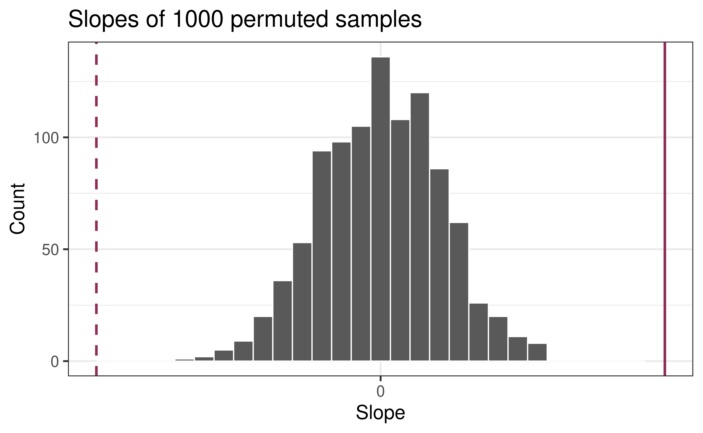
Permutation pipeline I
Response: Number_Organic (numeric)
Explanatory: Avg_Income_K (numeric)
# A tibble: 37 × 2
Number_Organic Avg_Income_K
<dbl> <dbl>
1 36 71.2
2 4 34.2
3 28 71.2
4 31 48.8
5 78 78.1
6 14 40.5
7 12 38.2
8 18 50.4
9 38 49.4
10 84 66.1
# ℹ 27 more rowsPermutation pipeline II
Response: Number_Organic (numeric)
Explanatory: Avg_Income_K (numeric)
Null H...
# A tibble: 37 × 2
Number_Organic Avg_Income_K
<dbl> <dbl>
1 36 71.2
2 4 34.2
3 28 71.2
4 31 48.8
5 78 78.1
6 14 40.5
7 12 38.2
8 18 50.4
9 38 49.4
10 84 66.1
# ℹ 27 more rowsPermutation pipeline III
set.seed(1218)
heb |>
specify(Number_Organic ~ Avg_Income_K) |>
hypothesize(null = "independence") |>
generate(reps = 1000, type = "permute")Response: Number_Organic (numeric)
Explanatory: Avg_Income_K (numeric)
Null H...
# A tibble: 37,000 × 3
# Groups: replicate [1,000]
Number_Organic Avg_Income_K replicate
<dbl> <dbl> <int>
1 38 71.2 1
2 56 34.2 1
3 28 71.2 1
4 14 48.8 1
5 29 78.1 1
6 36 40.5 1
7 84 38.2 1
8 18 50.4 1
9 96 49.4 1
10 26 66.1 1
# ℹ 36,990 more rowsPermutation pipeline IV
set.seed(1218)
heb |>
specify(Number_Organic ~ Avg_Income_K) |>
hypothesize(null = "independence") |>
generate(reps = 1000, type = "permute") |>
fit()# A tibble: 2,000 × 3
# Groups: replicate [1,000]
replicate term estimate
<int> <chr> <dbl>
1 1 intercept 47.8
2 1 Avg_Income_K 0.0555
3 2 intercept 58.0
4 2 Avg_Income_K -0.0914
5 3 intercept 57.3
6 3 Avg_Income_K -0.0817
7 4 intercept 78.9
8 4 Avg_Income_K -0.394
9 5 intercept 34.8
10 5 Avg_Income_K 0.244
# ℹ 1,990 more rowsPermutation pipeline V
Visualize the null distribution
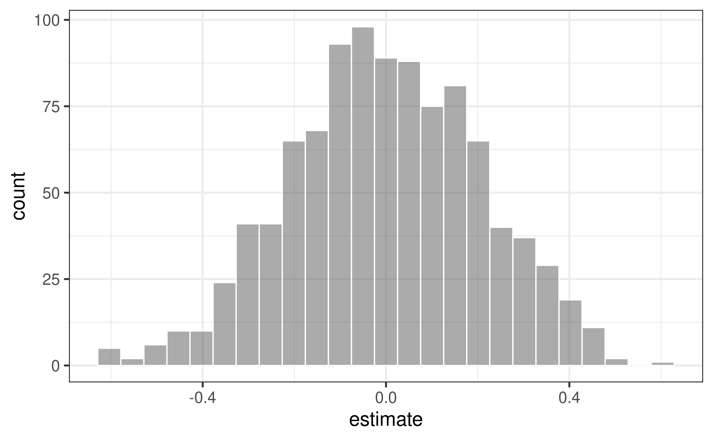
Complete Exercises 13 and 14.
Reason around the p-value
In a world where the there is no relationship between the the number of organic food options and the nearby average household income (\(\beta_1 = 0\)), what is the probability that we observe a sample of 37 stores where the slope fo the model predicting the number of organic options from average household income is 0.96 or even more extreme?
`stat_bin()` using `bins = 30`. Pick better value with `binwidth`.Warning: Removed 1 row containing missing values or values outside the scale range
(`geom_bar()`).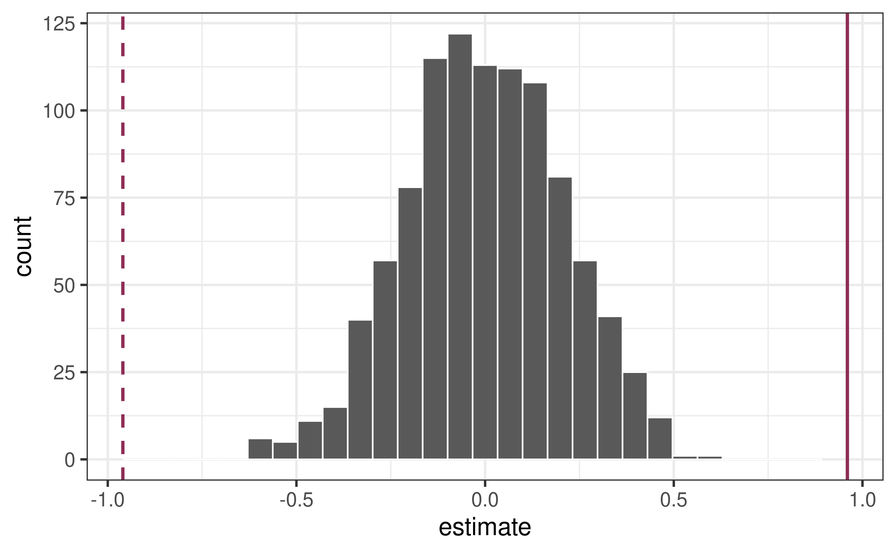
Compute the p-value
What does this warning mean?
get_p_value(
null_dist,
obs_stat = observed_fit, # Same as from confidence intervals
direction = "two-sided"
)Warning: Please be cautious in reporting a p-value of 0. This result is an approximation
based on the number of `reps` chosen in the `generate()` step.
ℹ See `get_p_value()` (`?infer::get_p_value()`) for more information.
Please be cautious in reporting a p-value of 0. This result is an approximation
based on the number of `reps` chosen in the `generate()` step.
ℹ See `get_p_value()` (`?infer::get_p_value()`) for more information.# A tibble: 2 × 2
term p_value
<chr> <dbl>
1 Avg_Income_K 0
2 intercept 0Complete Exercises 15 and 16.
Recap
Population: Complete set of observations of whatever we are studying, e.g., people, tweets, photographs, etc. (population size = \(N\))
Sample: Subset of the population, ideally random and representative (sample size = \(n\))
Sample statistic \(\ne\) population parameter, but if the sample is good, it can be a good estimate
Statistical inference: Discipline that concerns itself with the development of procedures, methods, and theorems that allow us to extract meaning and information from data that has been generated by stochastic (random) process
Recap Continued
Estimation: Use data to compute point estimate
- Report the estimate with a confidence interval, and the width of this interval depends on the variability of sample statistics from different samples from the population
Testing: Conduct a hypothesis test
- Assume research question isn’t true (Null hypothesis)
- Ask what distribution of test statistic is if null is true
- Ask if your data would be unusual if under this null distribution
- P-value: Probability your data (or even stronger evidence) was obstained from null distribution